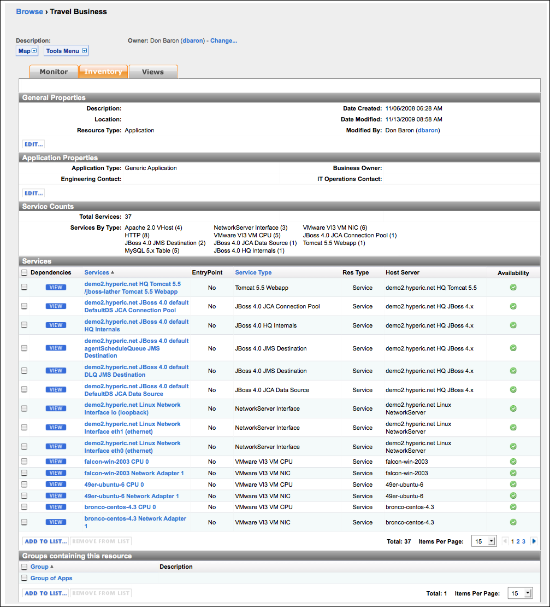

Topics marked with * relate to features available only in vFabric Hyperic.
In Hyperic, an application is an inventory type that is a collection of other inventory resources. This page describes the purpose of applications in Hyperic, and key application views in the Hyperic user interface
Note: For information about creating an application in Hyperic, see Create and Manage Applications.
Introduction to Applications in Hyperic
In Hyperic, an application is a collection of services that together fulfill a single business purpose. This concept reflects the idea that an application, from the business point of view, comprises many different pieces, and those pieces are usually distributed across different platforms and provided by different servers. Thus you can manage your infrastructure from an application — as opposed to a hardware — point of view.
In Hyperic, an application is an inventory type, configured by an authorized user. An application is a set of selected services, usually running in different servers on multiple platforms, that together fulfill a single business purpose. Configuring applications enables you to manage your infrastructure from an application — as opposed to a hardware — perspective.
| Hyperic Visibility into Instrumented Java Applications The Hyperic Agent can auto-discover and manage Java application services via Model MBeans that adhere to a specified ObjectName naming convention and expose a specified set of service data. This enables deeper visibility into application health: you can monitor application services along with the hosting application server and its internal services. For more information, see Java Applications. Note: Although instrumentation provides deeper visibility into Java application health, it is not required for application monitoring. |
Inventory Tab for an Application
The screenshot below shows the Inventory tab for the application. Note:
- This the tab you use to add services to an application.
- The "Service Counts" section shows the total number of services in the application, and the number of each type.
- The "Services" section lists key information for each service in the application.
- You can define and view the dependencies between services by clicking View button in the "Dependencies" column.

Monitor Tab for an Application
The screenshot below show the Monitor tab for an application. Note that:
- The Resources panel on the left side of the page lists the services in the application, grouped by type.
- The Indicator panel charts the aggregated values for selected metrics that are available for the services in the application and the servers where they run. The user that configures the application can choose the metrics to display as indicators.